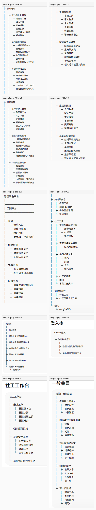

把所有服務一起列出來
開始檢測
免費諮詢
財務工具
知識內容
社工工具
活動課程
一般民眾會想：我現在到底該按哪一個？社工或助人工作者也可能會想：我要協助個案，入口在哪裡？
這份整理不是要推翻原本架構，而是想請夥伴一起確認：當好理家在同時服務社工、助人工作者，也開始協助一般民眾時，網站打開的第一步是否夠清楚。
先把大家的討論站在同一個位置，避免一開始就變成技術或頁面細節。
現在的內容都重要，但手機第一眼如果像服務總表，壓力中的使用者可能更難按下第一步。
一般民眾會想：我現在到底該按哪一個？社工或助人工作者也可能會想：我要協助個案，入口在哪裡？
服務仍然都在，只是先用更接近使用者心裡話的方式帶路，讓下一步比較直覺。
這樣可以兼顧台灣手機使用習慣、使用者的壓力狀態，以及助人工作者的現場需求。
不需要一開始就輸入完整數字或個人資料，可以先用模糊描述開始。
不是只給工具清單，而是讓現場工作可以接續：整理、判斷、轉介、追蹤。
先讓討論聚焦在首頁第一步，其他細節等方向確定後再展開。
「我想整理自己的狀況」和「我正在協助個案或家庭」是否比直接列功能更直覺？
例如「先說說我的狀況」、「做簡短檢測」、「找人一起整理」，哪一個最適合放第一個？
例如「會談後整理、風險快篩、轉介追蹤」是否比工具名稱更貼近現場？
這樣夥伴比較容易一起判斷，也比較不會把會議拉到過多細節。
這裡只保留定位，不在這次會議展開所有規則。
主頁先協助會議聚焦；文件細節保留在這裡，避免一開始資訊太多。
參考夥伴提供的「1150609 好理家在平台架構.docx」、目前 cowork-website 的網站雛形，以及針對一般民眾、社工與助人工作者的使用情境討論。
這頁目前放在 cowork-website 的獨立討論路徑，不放進主導覽，也不混入問問 AI、個人中心或社工服務頁。它是給夥伴討論用，不是正式上線頁。
先整理首頁第一眼的文字和排序，再做手機檢視，確認一般民眾與社工夥伴是否都能快速找到自己的下一步。
